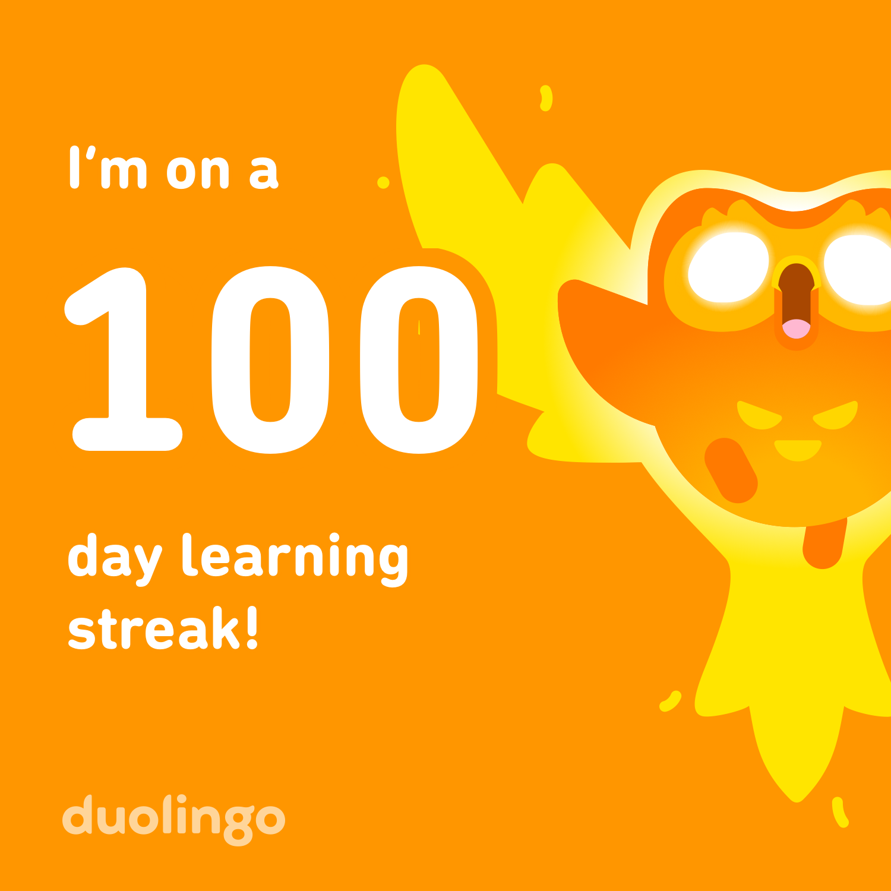
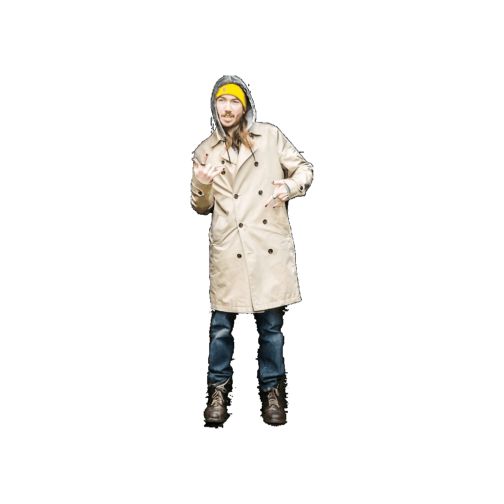

Blog eile agus Vlog eile!
Originally I started doing this in Irish only. However I have decided to expand into English. Mostly just to get better with the coding aspect. I picked up a couple of books from the Yorba Linda Library, and you may have noticed some new additions such as the Vlog.There is also a couple of back end changes which you dont see but can probably find on Git Hub. I have been at this for a while now just learning to code out of nowhere and now Im finding my way around multiple languages such a HTML CSS JAVA and Python. I started with learning CSound back in college 2013. Over ten years ago WOW!. I still have the bulk of my college notes. Everything music related will be found on Clovermind Music. I wanted this Dialann to be more free and full of thoughts, poems etc etc. Something old school creatively, like myspace vibes but bigger but all about MISE!.
Tá sceitimíní orm! tá an cead la seo ag foglaim le Duolingo. Is maith liom Duolingo ach ba breá liom a labhairt é. Nil aon Gaelteacht timpeall orm. Cupla Pubs í Long Beach and Brea. Ceapim as nGaeilge agus nuair beidh mé ag foghlaim Espanol, beidh mé ag smaoineamh as Gaeilge agus

Its called code switching I believe, which makes sense and I do very often in my head. For so long Irish has been rattling around my head and I need to get it out, I have very few that can speak around and at home even. I dont want to Lose it so I might aswell Use it anyway I can and Anois its gonna be online in my lil diary. I have a bunch of posts written out and I have even tried using Google Translate to answer a few questions but I feel its a lil off in the way we speak Irish vs how we write in Irish. Spelling is also mind boggling, very diferent from english and spanish. I am kicking ass either way. My weekend was go iontach! LOL. Yah it was very chill went to the park and wrote some poetry. Worked on alot of NEW music which i think is pretty good. You can listen to all my demos here I did live stream most days this week working on the same track. I notcied I have over 150 videos up now. My YouTube is busy!
Published on: